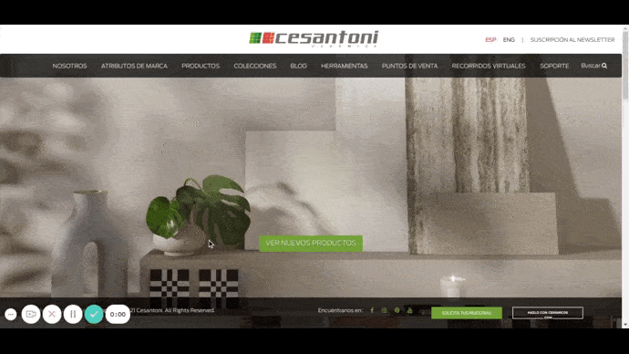

¿Antes y después de los cuartos de baño, ¿Qué hay que tener en cuenta? ¿Cómo hacer la remodelación de un baño pequeño?
- Antes y después
- Qué hay que tener en cuenta.
- Presupestación.
- ¿Cómo encontrar inspiración?
- Conclusión
Uno de los espacios más importantes e íntimos en nuestro hogar es el baño.
Muchas personas dicen tener un baño pequeño para realizar una remodelación, la realidad es que en la actualidad existen grandes posibilidades de hacer cuartos de baño modernos, elegantes, llenos de vida en espacios pequeños.
EL ANTES Y DESPUÉS DE LOS CUARTOS DE BAÑO.

En los años 80`s y 90`s la decoración dentro de este espacio era con colores un poco llamativos y tradicionales, en su mayoría esmaltados, en formatos pequeños desde 10x10, y los más usados 20x30 cms, se utilizaban mucho las flores, y los diseños geométricos.
Esto resultaba una opción económica para el cliente, pero en cuestión de posibilidades de diseños y estilos era algo limitada.
En Interpisos buscamos tener productos novedosos y de la mejor calidad para eso contamos con una de las principales marcas de pisos de México que es CESANTONI ya que fabrica pisos y azulejos con la mejor materia prima como el super gress pasta que permiten crear espacios de vanguardia, extraordinarios llenos de vida con múltiples acabados desde los brillantes, mate, cerosos, mármoles, piedras, en gran variedad de formatos desde los tradicionales hasta los grandes formatos 60*120, inspirados en la naturaleza que permite hacer que los baños por muy pequeños se vean elegantes y vanguardistas.
¿Qué hay que tener en cuenta?
Planeación y presupuesto
Planeación
La planeación es donde deberías de gastar la mayoría de tu tiempo ya que es muy importante tener en cuenta la remodelación como un todo, estableciendo desde el piso y muro hasta los accesorios de baño.
Aquí tienes algunos puntos claves a tener en cuenta para la remodelación de tu baño ya sea pequeño o cualquier medida:
- Tamaño
- Es muy importante tener en cuenta los lugares donde vas a realizar la instalación de algún producto, en algunas ocasiones tienes el deseo de instalar un baño que en realidad no es apto para tu espacio, cerciórate bien de lo que puede y no puedes disponer, de ser posible habla con un asesor.
- Diseño y decoración.
- Iluminación. Muchos de los conceptos que se van a tocar dependen mucho de tus ideas, pero como guías podemos comenzar diciendo que lo ideal es diseñar un baño con la mayor luz natural posible. Hay que tener en cuenta la idea de diseño y lo que se trate de resaltar con la luz, por ejemplo es buena idea resaltar muro o piso inspirado en piedra con luces cálidas, por otro lado si tu diseño está inspirado en elegancia con blancos es buena idea utilizar luces blancas. Colores Desde siempre la sociedad sigue las tendencias y al día de hoy las tendencias en colores para baños son colores brillantes, con grises y blancos. De igual forma te reiteramos que esto lo decides tú con tus gustos e ideas, puedes navegar en nuestros productos y encontrar algo que se ajuste a tus preferencias y necesidades. Ventanas Comúnmente las ventanas para baño son de tipo corredizas, de proyección, guillotina por mencionar algunas que permiten que el baño tenga buena ventilación. Hay muchos diseños de ventanas que puedes revisar, desde pequeñas ventanas hasta grandes ventanales. Ventilación La ventilación en un baño es muy importante y aún más si es un espacio pequeño. La ventilación no solo sirve para que se vayan los malos olores, sino también al circular el aire contribuye a reducir las humedades. El tomar una ducha caliente hace que el baño se llene de vapor, humedad que puede causar algunos problemas a la construcción.
Presupuesto
La remodelación de baños, es algo muy fácil si se tiene en cuenta los elementos claves que hacen de un baño una decoración sobresaliente. También hemos desglosado sus costos en un aproximado, para que tengas una idea del presupuesto que puedes invertir.DESGLOSE DE COSTOS
| Producto | Estimado | Descripción |
|---|---|---|
| Gabinete | $2,500 - $4,500, hasta $21,000 | Totalmente vale la pena invertir en un Gabinete, hacer una inversión acorde a tus posibilidades aumentan el confort y vista de tu espacio. |
| lavabo | $400 - $4,900 | No tan valioso, es una opción de muy baja calidad y si estás en remodelación de baño no es muy recomendable. |
| Regadera | $100 - $10,000 | Vale la pena, puedes comprar una regadera de 100 MXN común y corriente, pero si de verdad lo que estás buscando es un baño elegante y bonito, invierte un poco. |
| tina | $3,000 - $50,000 | Se podría decir que esto es un poco más de lujo, pero de nuevo si lo que estás buscando es hacer de tu baño un espacio elegante, vale la pena totalmente invertir en una tina agradable. |
| Cancel | $4,000 - $10,000 | Si tienes posibilidad tanto en dinero como en espacio en tu cuarto de baño, totalmente vale la pena. |
| Cortina | $400 - $1,900 mt2 | Consideramos las cortinas como última opción ya que el diseño no aporta gran distinción. Aunque con buen ojo aun pueden hacer una buena combinación en la remodelación. |
| Espejos | $500 - $4,000 | Parece que no, pero gran distinción y elegancia añade al diseño al elegir un espejo elegante. |
| Iluminación | $1,500 | La iluminación es algo muy importante en un pequeño cuarto y más aún en el baño, recuerda estamos buscando que la iluminación sea tenue y muy clara. |
| Piso y azulejo | $120 - $750m2 | Sin duda alguna el elemento clave en la remodelación y diseño. Es aquí donde la mayoría del análisis en cuestión del diseño ocurre. |
| Mezcladora de lavabo | $360 - $7,000 | De igual forma una pequeña parte en el baño que le dará un montón de diseño y distinción de un baño normal, a un baño moderno. |
| Sanitario | $1,800 - $10,000 | Una pieza también muy importante, es el sanitario, no hay muchos colores para hablar sobre formas de decorar tu taza, pero en cuestión de sistemas y comodidad hay que reflexionar bastante. |
| Accesorios | $600 - $7,000 | Los accesorios del cuarto de baño es el ingrediente que le da un toque agradable y elegancia. |
¿Cómo encontrar inspiración?
Podríamos comenzar diciendo que los colores clásicos de combinación son el negro y blanco ideales para un baño, pero hablar directamente aquí de un tema de diseño de interiores sería tan extenso que incluso podríamos escribir un libro entero sobre esto.
Una manera fácil de empezar a rodar las ideas creativas es encontrar inspiración en algo, para ello hemos realizado esta pequeña galería sobre remodelación de baños pequeños elegantes que hemos empaquetado para ti.
Añadido a esto te incluimos un enlace a una excelente herramienta en la que podrás subir una foto de tu espacio y decorarla virtualmente con los productos que vendemos.
GALERÍA DE BAÑOS MODERNOS
DECORA VIRTUALMENTE TU BAÑO CON LA HERRAMIENTA DE CESANTONI.
Una forma excelente de comenzar a visualizar tu espacio de una manera casi casi real es utilizar el decorador virtual, en el que puedes subir una foto de tu espacio (habitación, baño, cocina, cochera, etc), y utilizar productos de nuestro principal proveedor e idealizar tu diseño.
CONCLUSIÓN
Vamos a darte un ejemplo en la forma que podría usar la tabla de arriba. Recientemente una clienta visitó nuestra tienda y compro los siguientes materiales, un gabinete (aprox $15,000), un sanitario(aprox. $4,000), piso y azulejo(aprox. $8,500), además de adhesivos y emboquillado(aprox. 1,500) para un baño pequeño, lo cual le dio una cantidad de $29,000